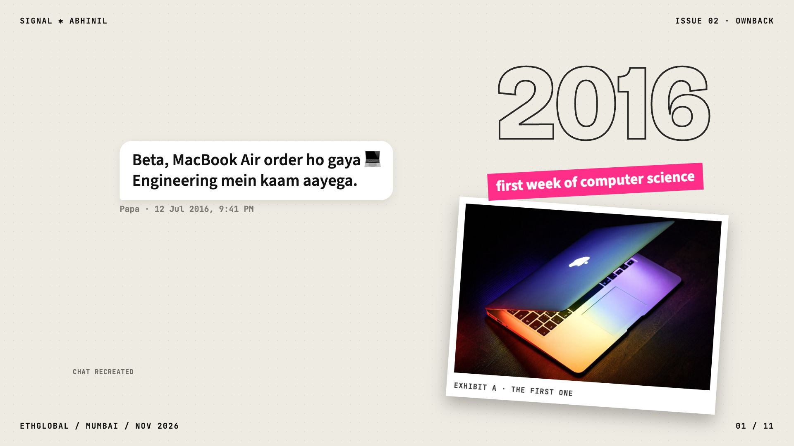

01 · Cold open · 20160:00.00 – 0:11.76 · 11.8s
- 0:00.87I've been an Apple user for ten years.
- 0:03.28It started in twenty sixteen... my first week of computer science engineering, when my dad bought me my first MacBook Air.
- Picture
- Zine cover in the style of your post: “I’ve been an Apple user for” + green block “10 years.”, real Apple logo sticker. Outline “2016” stamp, pink tag “first week of computer science”. A recreated chat from Papa (marked “chat recreated”, since there is no photo) and a polaroid of a 2015-era MacBook Air with the glowing logo: “Exhibit A · the first one”.
- Sound
- Soft felt-piano arpeggio starts. Paper slap on each sticker, message blips on the chat.
Sync points
- 0:02.37“ten” → “10 years.” block slams in
- 0:04.13“twenty sixteen” → 2016 stamp
- 0:08.73“dad” → Papa’s message pops
- 0:10.58“MacBook” → polaroid lands